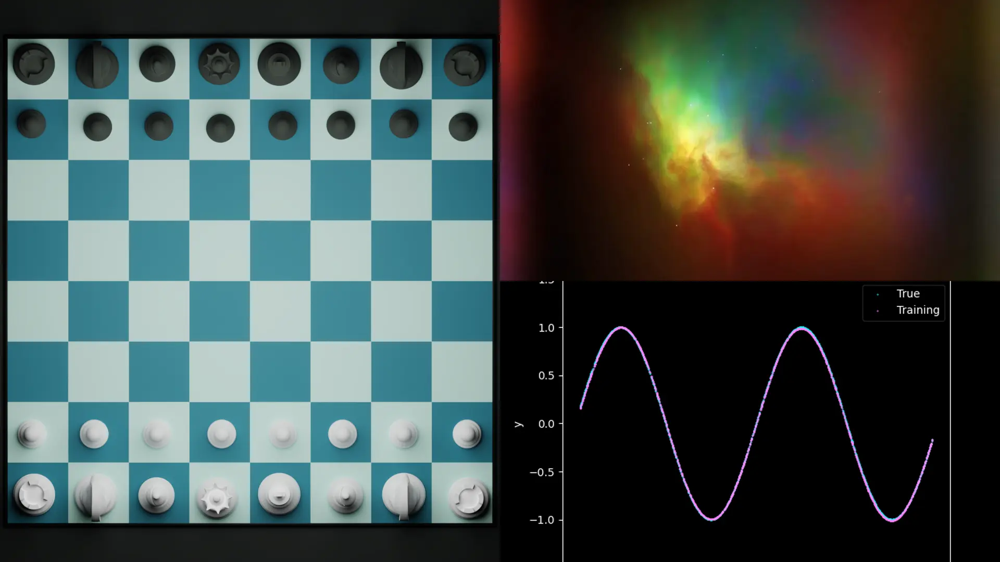
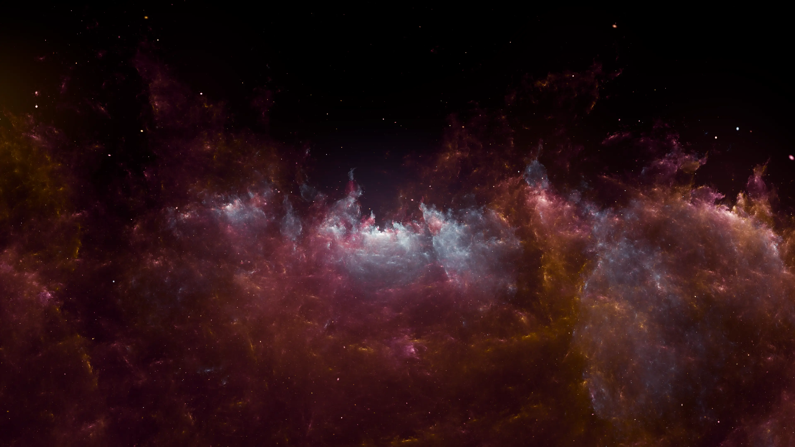

Hi there! I'm Syed Taha
Computer Science Student at IBA, Karachi.
TA @IBA | xECPD @DSS | xSWEF @Headstarter
Interested in systems programming and machine learning
I'm a CS student at IBA Karachi with a strong interest in systems programming, high-performance computing, and machine learning — particularly where they intersect at the hardware level. I've worked on things like porting an LLM inference engine to a minimal OS and vectorizing a CNN in RISC-V assembly.
Outside of that, I enjoy photography, 3D art with Blender, and teaching. I also write about things I build and figure out along the way — you can find those in the Blog page.
Let's get in touch
If you want a more complete picture of what I've been working on — projects, experience, coursework — LinkedIn is probably the best place for that. I try to keep it reasonably up to date with what I'm actually doing, not just the highlight reel.
You can also reach me directly by email if you'd like to talk about something specific. I'm generally happy to chat about projects, ideas, or anything CS-related.
The full picture
If you'd like to see everything in one place — education, projects, experience — my CV has it all. It's kept reasonably up to date. It covers the research work, the competitions, the TA roles, and the personal projects, all in one place.
If something on here catches your eye and you want to know more, feel free to reach out.

Things I've built
From a chess engine with a Minimax AI to a vectorized CNN running in RISC-V assembly, most of my projects start with a question I couldn't stop thinking about. Some were course-related, some were just curiosity, and a couple turned into proper research.
Have a look if you're curious — there's more detail on each one on the projects page.

Away from the keyboard
When I'm not at a keyboard, I'm usually doing photography, making something in Blender, or reading. These things keep me sane and, honestly, often feed back into how I think about the technical stuff too.
There's something about switching mediums entirely — from code to a camera or a 3D scene — that resets how I approach problems. I find it's worth doing regularly.
What I've picked up along the way
I enjoy working close to the hardware — RISC-V assembly, OS internals, vectorization, and performance profiling. There's something satisfying about understanding exactly what the machine is doing.
I've worked with PyTorch and TensorFlow on things ranging from CNNs and GANs to reinforcement learning and gradient boosting. I'm especially interested in how ML models behave under hardware constraints.
C++, Python, and JavaScript are my main tools. I'm comfortable building things end-to-end — from low-level systems work to web apps — and I try to write code that's clear and easy to reason about.